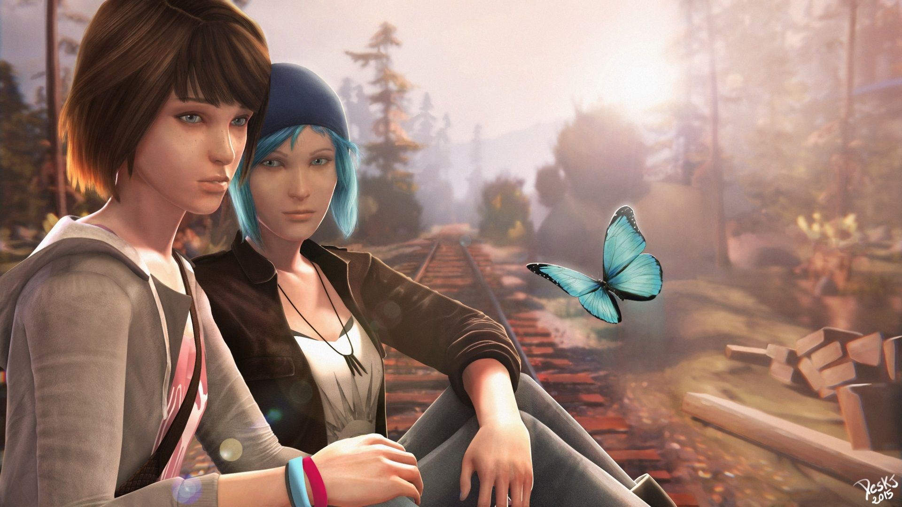
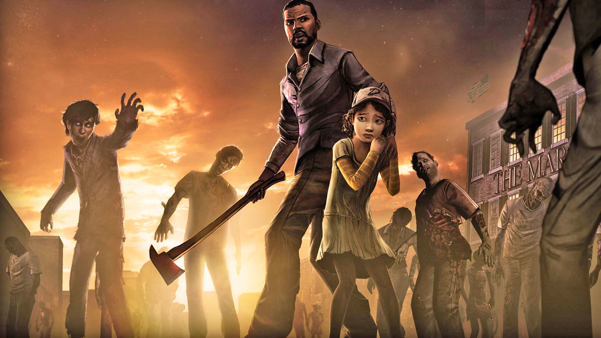
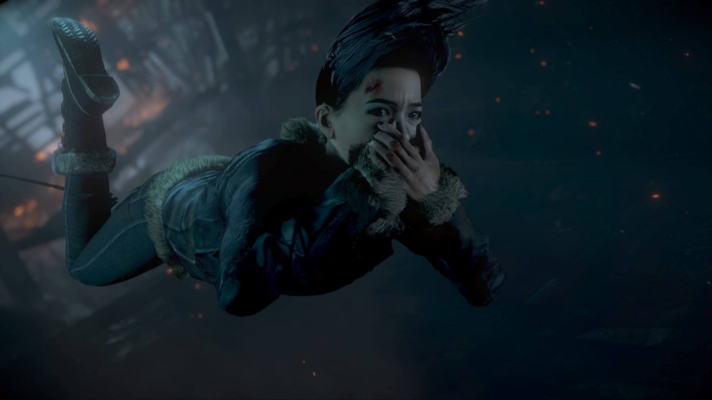

virtual reality games are games you play with a virtual reality headset and make it look like the things you see are really there
#1 Life is strange
Life is Strange is a really cool and unique game. In this game you play as a girl who has the ability to go back in time, so you make certain decisions but you can undo some of these decisions. Story line is incredibly intersting, there are tons of different dilemmas and plottwists, so you won't be bored whilst playing this game! While in most choices matter games the choices tou make immediately make a difference, in this game some decisions don't seem to have much impact, but they make a bif differnece when you get deeper and deeper involved in the story.
#2 Detroit become human

Connor
Another really cool and interesting game is Detroit beome human. This game involves so calles Androids, robot like tingd made by a company to accomplish different tasks like, for example. cleaning and doing the laundry. In this game there are three different story lines, where you play as an Android. The game contains a lot of conflict and has a lot of unexpected turns, it portrays different life threatening situations in which you have to make the rigt decisions in order to survive. Your choices also chance the way different characters in this game think about you, so you'll have to improve your relationships with others by making certain choices.
#3 The Walking Dead
The Walking Dead is a very different game based on the series The Walking Dead. It involves around different main charcters almost every game, so you'll play as a different generation every game. The choices you make in this game are quite simillair ro most choices matter games, beacuse they chance the storyline. In this particular game there is a mix between choices that have an impact on your relatonships with others and combat against zombies and other characters. What makes this game especially different is it's at style, it has a unique cartoon style art, which fits the game perfecly and keeps it very interesting.
#4 Until Dawn
Until Dawn is a horror game